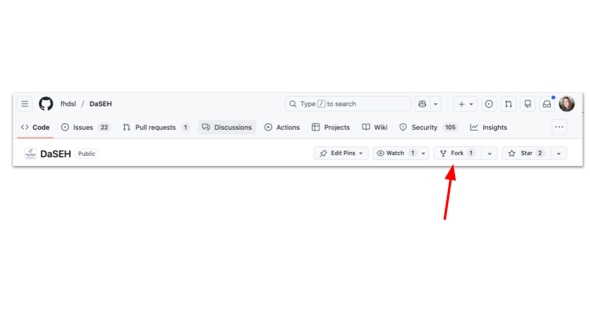
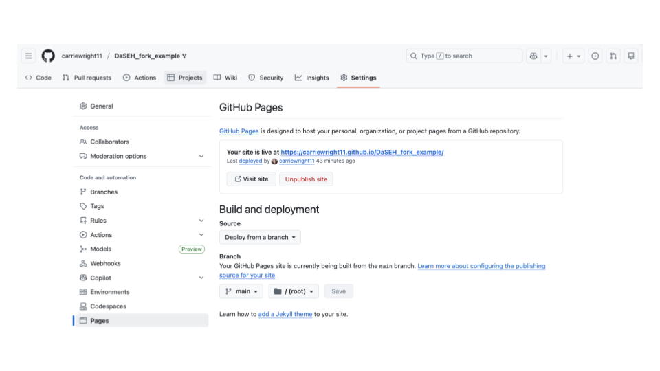

Chapter 4 Modifying DaSEH Materials 
4.1 Learning Objectives
This chapter will cover how to modify the DaSEH resources to suit your own needs using the following methods:
- Modify the website
- Modify module lecture slides
- Modify module labs and lab keys
- Modify codeathon resources
4.2 Modify the website
If you would like to make a copy of our website to modify for your own use, there are a couple of options.
You can “fork” our repository so that you can keep track of changes that we make and send us suggestions if you’d like. This also allows you to use the same infrastructure that we did to create our website. Please be sure to update the website so that it is clear who ultimately made your site and please indicate that you are using our resources or a modified version of our resources.
You can copy the files from our repository into your own website - to access the contents of the files, go to our repository on GitHub. This allows you to use whatever website setup you would like.
4.2.1 Creating a fork of our repository
To create what is called a “fork” of our repository (which allows you to make your own version based off of ours) then look for the fork button on the upper right corner of our repository on GitHub.

Once you click this, you will be taken to a new page where it will ask you what you would like to call your new repository.
You will likely want to change the name for your course/use.
You can also optionally select to have your repository as part of a GitHub organization (if you are part of one) instead of just using your personal account.
Please also change the description to explain what your use is and that are modifying our files.
Ensure that the copy the main branch only is selected.
Then click the green “Create fork” button.
Here is what the page looks like:

Next to set up the website deployment you will need to do a few steps.
- Setting up the website
- First go to the “Settings” page (top menu)
- Then scroll down to the “Pages” (on the left menu)
- Next configure your website to use the main branch (where it says “none”) and the root folder and press save

- Create a secret (to give you the right permissions)
This allows you to run the GitHub actions that we use safely.
- Click on your profile photo in the upper right corner
- Scroll down to Settings in the menu that pops up and right click to open it in a new tab
- Scroll all the way down on the left menu to the bottom where it says Developer Settings
- Score down on the left side menu and click on Personal Access Tokens
- Select Tokens (classic)
- Click the Generate new token button that is in the upper right
- Select Generate new token (classic)
- Confirm your access with any two factor authentication if you have that set up
- Name your token GH_PAT in the “Note” section
Note that your token will expire based on the date that you set in the Expiration section. You will have to complete this process again when your token expires. GitHub will let you know as you will get an error about credentials. It is a good idea to use the default settings. You will just repeat this process when the time comes. This cheatsheet may also be helpful.
Underneath Select Scopes (where the check boxes are), check repository (so everything under it is checked) and workflow
Click the green Generate Token button at the bottom
Copy your personal access token (Note that you will note have access to it again, you can always however just make a new one. Do not store it anywhere public.)
- Add your secret to your repository
Now that your secret is ready we will add it back to our website repository that we created from the DaSEH repository.
- Go to Settings at the top menu of your repository
- Go to Secrets and variables in the left side menu
- Click on Actions
- Under Repository secrets, click on the green “New repository secrets” button
- Under name, enter GH_PAT
- For the secret section paste the secret that you copied
- Click the green “Add secret” button.
Note that GitHub sometimes changes their website, so this process might slightly change. We will try to keep this information up-to-date however.
Nice! Now you are ready to modify your new website. You can find your rendered website under the repository settings tab (top menu) and scrolling down to pages (left menu) again.
You will see that the page now lists a link for your new website. You can click “Visit site” to see your website or copy and paste the link. This is the link you can share with students/learners.

Currently your website should look exactly like ours. Now you are ready to actually modify some files. To do so go to the main page of your repository.
You can either click the green code button to clone the repository to work on your local machine (say on RStudio) which is trickier but recommended as you can actually test any changes to your code on your machine or you can modify the files directly on GitHub.
Please see this guide on how to make changes with either method: https://www.ottrproject.org/editing_website.html.
Note that lecture slides and lab files will be within the modules folder and organized by topic.
We will now talk about how to modify these files.
4.3 Modify module slides
The modules are written in R Markdown documents and developed within an RStudio project. R Markdown documents are denoted with the file extension “.Rmd” and allow for the inclusion of code chunks and outputs in a written report. They are written using Markdown syntax. RStudio projects are used to organize files. The knitr package “knits” the case study written in R Markdown and outputs the document as an HTML file. DaSEH uses these HTML files to post the materials online.
See the above sections about modifying the website to get the files that were used for the module lectures.
Each of the lectures can be found within the modules directory of our DaSEH GitHub repository.
Each module folder contains the lecture slides within the .Rmd file.
To edit a lecture, locate the appropriate directory within modules and edit the .Rmd file. For example, if you want to edit the Statistics lecture, you’d edit Statistics.Rmd in the modules/Statistics/ directory.
** Do not edit the html or pdf files. These are automatically generated by GitHub Actions. **
However, sometimes workflows don’t complete, so it’s always good to double check that htmls and pdfs are appearing as expected on the website once your PR is merged to main.
You will notice that ## is used throughout the file. This indicates where the start of a new slide is.
A single # indicates a new section slide, which will be a slide that looks like this:

4.3.1 Emojis in slides
We recommend copying and pasting from here.
4.3.2 Smaller text font per slide
If you want to change the style of a slide, modify the style.css file.
For example - this is how you can make slides with smaller font:
In the style .css file is the following- which creates smaller font:
.small {
font-size: 0.8em;
}
To change the font of a single slide you can putt {.small} next to a slide title like so:
## slide name {.small}
4.3.3 Smaller code font per slide
In the style .css file is the following- which creates smaller font:
.codesmall pre {
font-size: 16px;
}This can be applied to a slide by putting {.codesmall} next to a slide title like so:
## slide name {.codesmall}
4.3.4 Add color to slide text
:::{style="color: red;""}
RED STUFF!
:::or like this:
Integer is a special subset of numeric that contains only whole numbers.
4.3.5 Add background color to code chunk describe general syntax for code
In the styles.css file is the following:
.codeexample pre{
background-color: lightgreen;
}To add this to a chunk use this in the Rmd file before and after the chunk:
<div class = "codeexample">
``` r
#some code
```
</div>4.3.6 Create gifs
To create video gifs first record your screen like so (note this is for Mac users):
- Command + Shift + 5
- Select either entire screen - or more likely a portion of the screen button
- Click record
Next convert the video to a gif using https://ezgif.com/video-to-gif.
Be sure that you select gif as the output.
These slides are made with something called ioslides. See [this website for additional help with ioslides] (https://bookdown.org/yihui/rmarkdown/ioslides-presentation.html).
4.4 Modifying Labs
Within each module directory, there is a subdirectory called lab. Locate the lab subdirectory within the appropriate module directory and edit the _Key.Rmd file. For example, if you want to edit the Statistics lab, you’d edit Statistics_Lab_Key.Rmd in the modules/Statistics/lab/ directory.
** Only edit the _Key.Rmd. Do not edit the html or pdf files, or the _Lab.Rmd file. These are automatically generated by GitHub Actions. ** The _Lab.Rmd file is automatically cleaned up for students to fill in during class.
4.4.0.1 How does the lab file cleanup work?
When creating the lab key, you will write the answer to the questions in the key. However, for the file that the students see, we want the answers to be removed.
To make sure this happens correctly, the chunks you want to clean must have a label ending with response. Chunks without a label following this pattern will be ignored and reproduced exactly for the students.

4.4.0.2 Manually Download Data from GitHub:
- Download the .Rmd files found in the modules directory of the GitHub repository (and any relevant data files from the data directory).
The list of corresponding lectures is available on the materials and schedule page of the DaSEH website and the data files are listed on our data page.
- Move the data files from your ‘Downloads’ folder to your R session’s current working directory (you can see what this is with
getwd()). Open the files that you wish to modify in RStudio or wherever you like to work.
4.5 Modify Codeathon materials
Our codeathon materials are Google Slide presentations which are available to view by the public. This allows for copying and pasting content within the slides.
If you would like access to the raw slides, please reach out to us at daseh@fredhutch.org.
4.6 Distribute your modified content as you please!
You can share HTML, PDF and Word files directly with your students or you can host your website for free on GitHub using GitHub pages (pages_github?) as described above.
If you are new to GitHub, also be sure to check out Happy Git with R (happygitwithr?).
4.7 Session info
## R version 4.3.2 (2023-10-31)
## Platform: x86_64-pc-linux-gnu (64-bit)
## Running under: Ubuntu 22.04.4 LTS
##
## Matrix products: default
## BLAS: /usr/lib/x86_64-linux-gnu/openblas-pthread/libblas.so.3
## LAPACK: /usr/lib/x86_64-linux-gnu/openblas-pthread/libopenblasp-r0.3.20.so; LAPACK version 3.10.0
##
## locale:
## [1] LC_CTYPE=en_US.UTF-8 LC_NUMERIC=C
## [3] LC_TIME=en_US.UTF-8 LC_COLLATE=en_US.UTF-8
## [5] LC_MONETARY=en_US.UTF-8 LC_MESSAGES=en_US.UTF-8
## [7] LC_PAPER=en_US.UTF-8 LC_NAME=C
## [9] LC_ADDRESS=C LC_TELEPHONE=C
## [11] LC_MEASUREMENT=en_US.UTF-8 LC_IDENTIFICATION=C
##
## time zone: Etc/UTC
## tzcode source: system (glibc)
##
## attached base packages:
## [1] stats graphics grDevices utils datasets methods base
##
## loaded via a namespace (and not attached):
## [1] jsonlite_2.0.0 dplyr_1.1.4 compiler_4.3.2 gitcreds_0.1.2
## [5] promises_1.2.1 tidyselect_1.2.0 Rcpp_1.0.12 webshot2_0.1.2
## [9] xml2_1.5.1 stringr_1.5.1 tidyr_1.3.1 later_1.3.2
## [13] jquerylib_0.1.4 yaml_2.3.12 fastmap_1.1.1 readr_2.1.5
## [17] R6_2.6.1 generics_0.1.3 curl_7.0.0 knitr_1.50
## [21] tibble_3.3.0 bookdown_0.46 rprojroot_2.1.1 tzdb_0.4.0
## [25] bslib_0.6.1 pillar_1.9.0 rlang_1.1.6 utf8_1.2.4
## [29] websocket_1.4.4 stringi_1.8.3 cachem_1.0.8 xfun_0.55
## [33] sass_0.4.8 cli_3.6.5 magrittr_2.0.3 ps_1.9.1
## [37] digest_0.6.34 rvest_1.0.5 processx_3.8.6 hms_1.1.3
## [41] lifecycle_1.0.4 chromote_0.5.1 vctrs_0.6.5 ottrpal_2.0.0
## [45] evaluate_1.0.5 glue_1.7.0 spelling_2.3.2 fansi_1.0.6
## [49] purrr_1.0.2 rmarkdown_2.25 httr_1.4.7 tools_4.3.2
## [53] pkgconfig_2.0.3 htmltools_0.5.7 All illustrations
All illustrations